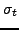
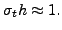
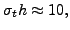
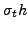
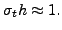
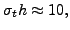
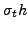

This talk presents a new multigrid method applied to the most common Sn discretizations
(Petrov-Galerkin, diamond-differenced, corner-balanced, and discontinuous Galerkin) of
the mono-energetic Boltzmann transport equation in the optically thick and thin regimes, and
with strong anisotropic scattering. Unlike methods that use scalar DSA diffusion preconditioners
for the source iteration, this multigrid method is applied directly to an integral equation for the
scalar flux. Thus, unlike the former methods that apply a multigrid strategy to the scalar DSA
diffusion operator, this method applies a multigrid strategy to the integral source iteration
operator, which is an operator for 5 independent variables in 3-d and 4 in 2-d : 3 or 2 in space
and 2 in angle. The core smoother of this multigrid method involves applications
of the integral operator. Since the kernel of this integral operator involves
the transport sweeps, applying this integral operator requires a transport sweep
(an inversion of an upper triagular matrix) for each of the angles used. As the equation is in
5-space or 4-space, the multigrid approach in this talk coarsens in both angle and space,
effecting efficient applications of the coarse integral operators. Although each V-cycle
of this method is more expensive than a V-cycle for the DSA preconditioner, since the DSA equation
does not have angular dependence, the overall computational efficiency is about
the same for problems where DSA preconditioning is effective. This new method also appears
to be more robust over all parameter regimes than DSA approaches. Moreover, this new method is
applicable to a variety of Sn spatial discretizations, to problems involving a combination
of optically thick and thin regimes, and more importantly, to problems with anisotropic
scattering cross-sections, all of which DSA approaches perform poorly or are not applicable to.
This multigrid approach is most effective in neutron scattering applications, where the total
cross-section coefficient  and spatial meshsize  satisfies

For this case, coarsening can be done aggressively. For problems with
 this
multigrid scheme requires a moderate coarsening rate. An even slow coarsening is required
for problems with
 ranges between 20 and 1000, which occur in high-energy photon applications.
satisfies

For this case, coarsening can be done aggressively. For problems with
 this
multigrid scheme requires a moderate coarsening rate. An even slow coarsening is required
for problems with
 ranges between 20 and 1000, which occur in high-energy photon applications.